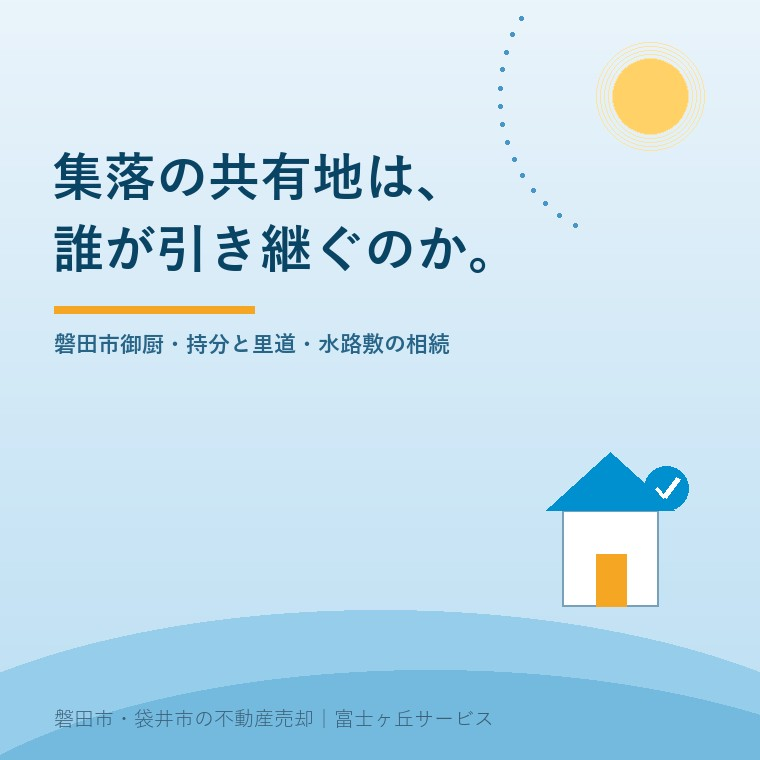

2026年8月15日｜カテゴリ：地域と不動産／相続・名義

この記事の要点
Q. 父の相続で実家を引き継いだのですが、登記簿を見たら「父の名前 外12名」という見たこともない土地が出てきました。これは何ですか。放っておいていいですか。
A. 集落で共同管理してきた土地の持分である可能性が高いです。放っておくと、後の代がもっと困ります。旧村の集落には、農作業道、水路、井戸端、集会所の敷地、共同墓地といった複数名義の共有地が残っています。登記簿の表題部が「Ａ外○名」となっているものを記名共有地、「大字○○」となっているものを字持地と呼び、国土交通省は所有者不明土地の典型例として挙げています。実家の売却そのものは、これらの持分がなくても進められることがほとんどです。問題は持分だけが宙に浮くこと。共有者が代を重ねるほど人数が増え、いずれ誰にも動かせなくなります。確認の順番は、①亡くなった方の名義の不動産をすべて洗い出す ②宅地・農地・共有地・墓地に仕分ける ③里道や水路敷は市の管理か、私有地かを確かめるの3つです。磐田市・袋井市・森町では、介護施設の運営から不動産事業を始めた富士ヶ丘サービスのような「介護×不動産」専門の会社に相談するという選択肢があります。
磐田市の御厨。東新屋に交流センターがあり、令和2年に御厨駅が開業して、若い世帯の家も増えました。けれども一本道を入れば、そこは今も旧村の集落です。
集落には、誰か一人のものではない土地があります。農作業に使う細い道。田んぼの間を流れる水路。かつての井戸端。集会所の敷地。そして、山際や田の隅にある共同の墓地。
こういう土地は、明治以来の経緯で、集落の何人かの名前で登記されたままになっていることがあります。そして実家を相続すると、その持分も一緒に付いてきます。
お盆が明けたところです。ご実家の書類を整理していて、見覚えのない地番が出てきた方もいるでしょう。今日は、この「集落の共有地」をどう扱うかを整理します。制度の部分は、2026年8月15日時点で法務省・国土交通省・磐田市が公表している内容に沿って書きます。
まず、登記簿の表題部の書かれ方から入ります。
国土交通省が法務省の編集協力を得て作成した所有者不明土地ガイドブックには、「表題部所有者不明土地の例」として、次の3つが挙げられています。
① 住所の記載がない土地（単有・共有） 「Ａ」
② 字持地 「大字○○」
③ 記名共有地 「Ａ外○名」
それぞれ、こういう土地です。
| 呼び方 | 登記簿の見え方 | 実際に何か |
|---|---|---|
| 記名共有地 | 「Ａ外○名」──代表者一人の名前だけがあり、残りは人数だけ | 集落の複数名で持っていた土地。残り○名が誰なのかが登記簿から分からない |
| 字持地 | 「大字○○」──個人名ではなく地域の名前 | 集落そのものの名義。法人格がないため、誰が所有者か特定しづらい |
| 住所の記載がない土地 | 名前はあるが住所がない | 戸籍や住民票をたどる手がかりがない |
ガイドブックは、こうした土地について「氏名や住所の記録がないため、戸籍や住民票等による所有者調査の手掛かりがなく、所有者の発見が特に困難」だと説明しています。
ご実家がこのどれかに関わっているかどうかは、まず「亡くなった方の名義の不動産を全部出す」ところから始まります。その方法は所有不動産記録証明制度の記事に書きました。令和8年2月に始まった制度で、亡くなった方が全国のどこに不動産を持っていたかを一覧で取れるようになっています。集落の共有地は、まさにこの制度で初めて存在に気づくことが多い土地です。
放置されてきた話ではありません。表題部所有者不明土地の登記及び管理の適正化に関する法律（令和元年法律第15号）が令和元年5月17日に成立し、同月24日に公布されました。法務局の説明によれば、施行日は次のとおりです。
この法律で、登記官に所有者の探索のための調査権限が与えられ、所有者等探索委員の制度が創設されました。探索しても所有者を特定できなかった土地については、裁判所が選任した管理者による管理を可能とする制度が設けられています。
つまり、行政の側から「この土地の所有者を調べます」と動くことがあり得ます。そのとき、相続人であるあなたのところに照会が来ることになります。
集落の土地でもう一つ多いのが、里道（赤道）と水路（青水路）です。畑の間の細い道、田んぼに水を引く用水路。地図では色分けされていたことから、この呼び方が残っています。
これらは法定外公共物と呼ばれ、かつては国の財産でした。国土交通省の説明によれば、地方分権の推進を図るための関係法律の整備等に関する法律が平成12年4月1日に施行され、国土交通省所管の里道・水路などの法定外公共物は無償で市町村へ譲与されることになりました。譲与期間は平成17年3月31日までで、譲与後は市町村が所有者となり、財産管理・機能管理とも市町村が行っています。
ここが実務でとても大事です。敷地の脇にある細い道や水路が、
で、話がまったく変わります。前者なら市に相談する話ですが、後者なら、それはあなたが相続した財産です。
磐田市では、道路河川課の管理グループが道路・河川の承認事務、占用許可、官民境界の確定を担当しています。西庁舎2階、電話は0538-37-4808です。排水路や河川の維持修繕については、同じ課の治水対策推進室（0538-37-4993）が担当です。
用途廃止や払下げの取扱いは年度や個別の状況によって変わりますので、最新の手続きは必ず磐田市道路河川課へご確認ください。
なお、敷地に接する道が実際に通行に使われている場合、境界の確認が必要になることがあります。この作業は隣家が揃う時期にしかできません。お盆の境界立会いの記事に書いたとおり、人が集まる時期は年に何度もありません。
集落の共有地の中で、いちばん扱いに迷われるのが墓地です。ここは2つに分けて考えてください。
民法第897条は、こう定めています。
系譜、祭具及び墳墓の所有権は、前条の規定にかかわらず、慣習に従って祖先の祭祀を主宰すべき者が承継する。ただし、被相続人の指定に従って祖先の祭祀を主宰すべき者があるときは、その者が承継する。（民法第897条第1項）
第2項では、慣習が明らかでないときは、家庭裁判所が定めるとされています。
つまり、お墓や仏壇、系図は、他の財産とは別の道筋で承継されます。法定相続分で分けるものではなく、遺産分割協議の対象にもなりません。「祭祀を主宰すべき者」が一人で引き継ぐという仕組みです。
神棚や敷地の祠、氏神への挨拶については実家じまいで見落とされる神棚・敷地の祠・氏神への挨拶に書きました。あわせてお読みください。
一方、共同墓地の敷地そのものが集落の共有名義で登記されている場合、その持分は不動産です。祭祀財産の承継とは切り離して考える必要があります。
磐田市では、市営墓地に関することは環境課の生活環境グループ（西庁舎1階、電話0538-37-2702）が担当しています。改葬の手続きも同課の扱いです。ただし、集落が管理する共同墓地は市営墓地とは別物ですので、まずは自治会や墓地の管理者に、これまでどう扱われてきたかを確認するのが順番です。
お墓を動かす予定がある場合は、必ず先に改葬の手続きをご確認ください。土地の話と、遺骨の話は、進み方が違います。
「共有者の他の12人が誰なのか分からない」「分かっても連絡がつかない」。これがこの問題のいちばん重い部分でした。
ただし、令和5年4月1日から、民法のルールが変わっています。法務省の資料によれば、令和3年4月21日に成立した民法等の一部を改正する法律により、土地利用に関連する民法のルールの見直し（共有制度の見直しを含む）が令和5年4月1日に施行されました。
実家じまいに関係する部分を3つ挙げます。
民法第252条第1項は、共有物の管理に関する事項は、各共有者の持分の価格に従い、その過半数で決すると定めています。全員の同意が要るのは、第251条の「変更」に当たる行為です。草刈りや簡易な補修のような管理行為まで全員の同意が必要だと思い込んで、何も動かせずにいるケースがあります。
民法第251条第2項は、共有者が他の共有者を知ることができず、又はその所在を知ることができないとき、裁判所が、その共有者以外の同意で変更を加えられる旨の裁判をすることができると定めています。第252条第2項にも、管理についての同様の規定があります。
民法第262条の2は、不動産の共有で所在等不明共有者がいる場合、裁判所が、請求した共有者にその持分を取得させる旨の裁判をすることができると定めました。取得した共有者は、所在等不明共有者から持分の時価相当額の支払を請求される立場になります。
ただし条文には制限もあります。持分が相続財産に属する場合（共同相続人間で遺産分割をすべき場合に限る）で、相続開始の時から10年を経過していないときは、この裁判をすることができません。
手続きは裁判所を通すもので、費用も時間もかかります。「制度があるから簡単に解決する」という話ではありません。それでも、以前は打つ手がなかった場面に道ができたことは知っておいてください。
ご相談でいちばん多いのが、これです。「実家は売る。でも、集落の共有地の持分はよく分からないから、そのままにしておく」。
気持ちは分かります。ただし、そのままにすると次の代で確実に重くなります。理由は単純で、共有者が代を重ねるたびに人数が増えていくからです。今12人なら、次の代で30人、その次で60人。きょうだい共有名義の記事で書いた仕組みが、集落規模で起きます。
加えて、相続登記は令和6年4月1日から義務になりました。法務省の説明によれば、相続人は不動産を相続で取得したことを知った日から3年以内に相続登記を申請しなければならず、正当な理由がないのに違反した場合、10万円以下の過料が科される可能性があります。
そして重要なのは、令和6年4月1日より前に相続した不動産についても、相続登記がされていないものは義務の対象になるという点です。この場合の期限は令和9年3月31日までとされています。
令和9年3月31日。祖父名義のまま残っている集落の共有地も、この期限の対象になり得ます。数次相続の記事で書いた「相続人が10人」の状態は、ここでも起きます。
現実的な進め方を書きます。持分の価値が小さくても、実家の相続登記をするときに、同じ相続人・同じ書類でまとめて処理してしまうのがいちばん安く済みます。後から単独でやると、戸籍を集め直すところからやり直しになります。司法書士に依頼するなら、最初に「これで全部です」と地番を並べて渡せるかどうかで費用が変わります。
ご実家に行かれたなら、次の3つを持ち帰ってください。
そして、ご親族に一言だけ聞いておいてください。「うちが持っている共有の土地って、何かある？」。この一言で出てくる情報は、書類を10通取るより早いことがあります。その話を知っている世代が、まだいらっしゃるうちに。
当社は、磐田市見付で介護施設を運営するところから不動産の仕事を始めました。ご相談の入口は、たいてい「親が施設に入った」「親を看取った」です。
旧村のご実家では、名義の話が家一軒では終わりません。宅地、田畑、山、そして集落の共有地。これらが同じ人の名義で、しかも何代か前のまま残っている。介護の相談から入って、気づけば地番を数え上げているということが、実際によくあります。
私たちが目指しているのは「高く売る」だけではなく、「家族が困らない売却」です。売れる土地と、売れないけれど整理しておくべき土地を、同じ紙の上に並べる。これが、介護から始まった不動産会社にできることだと思っています。
価格の前に事実を整理する道具として、ふじがおか実家カルテを用意しています。
集落の共有地は、誰かが困って作ったものではありません。みんなで使うために、みんなで持っていた土地です。その仕組みが、人が減り、代が変わることで、動かしにくくなっているだけです。
まずは、固定資産税の通知書と、権利証の束をご用意ください。それだけで、確認の順番を一枚にしてお渡しできます。
ふじがおか実家カルテ｜集落の共有地・農地つきの実家にも対応します
見覚えのない地番から、片づける。
住所をもとに、名義と相続登記の順番、共有地・墓地・里道の見分け方、農地の有無、道路と境界の状況を整理し、次に何を確認すべきかを1枚にしてお出しします。作成料0円・入力約1分。申込みだけで売却依頼にはなりません。
本記事は2026年8月15日時点で法務省・国土交通省・磐田市等が公表している情報に基づく一般的な解説であり、個別の土地についての判断や、共有関係の解消の可否を示すものではありません。登記簿の表題部・権利部の記載から実際の権利関係を確定するには、公図・旧土地台帳・地積測量図・過去の経緯を含めた調査が必要です。里道・水路敷の用途廃止や払下げの取扱い、境界の確定の手続きは磐田市道路河川課へ、墓地および改葬の手続きは磐田市環境課へ、それぞれ最新の内容をご確認ください。集落が管理する共同墓地は市営墓地とは取扱いが異なります。祭祀財産の承継、遺産分割、共有物分割や所在等不明共有者に関する裁判手続きは弁護士へ、相続登記は司法書士へ、境界の確定は土地家屋調査士へ、相続税の評価は税理士へご確認ください。個別のご相談は当社までどうぞ。

この記事を書いた人：大石浩之（宅地建物取引士）
磐田市・袋井市・森町で「介護×相続×空き家」に特化した不動産売却支援を行う富士ヶ丘サービスの代表取締役・宅地建物取引士。介護施設の運営から不動産事業を始めた経験をもとに、売主とご家族が困らない売却を一件ずつお手伝いしています。プロフィール
磐田市・袋井市・森町の実家じまい・相続空き家相談
固定資産税通知書だけでも相談できます
住所があいまいでも、通知書や写真から名義・道路・農地・残置物の確認順を整理します。カルテ申込またはLINEで状況を送ってください。
富士ヶ丘サービス株式会社／静岡県磐田市見付5789番地1／TEL:0538-31-3308／静岡県知事 (2) 第14083号／代表取締役・宅地建物取引士 大石 浩之